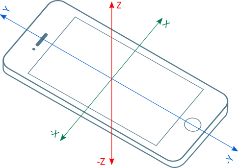
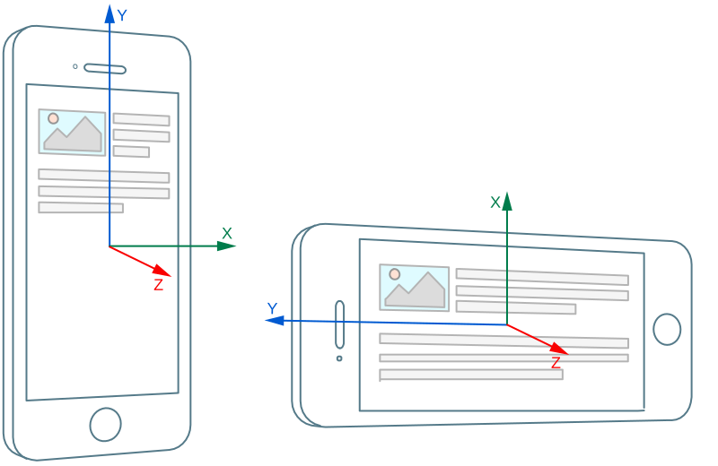
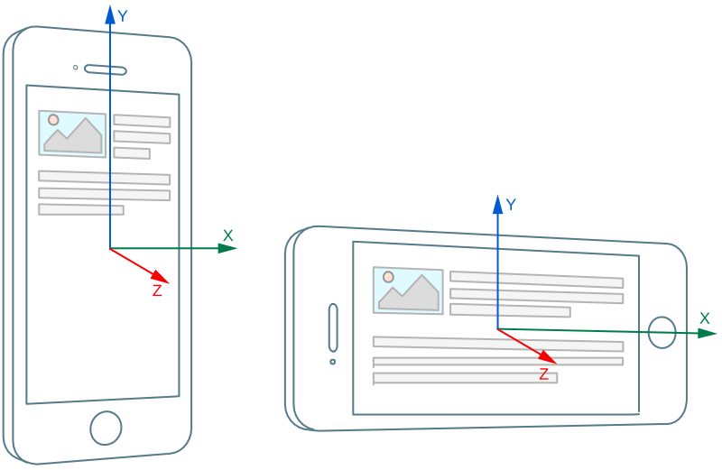

1. Introduction
The Accelerometer, LinearAccelerationSensor and GravitySensor APIs extends the Generic Sensor API [GENERIC-SENSOR]
interface to provide information about acceleration applied to device’s
X, Y and Z axis in local coordinate system defined by device.
2. Examples
let sensor= new Accelerometer(); sensor. start(); sensor. onreading= () => { console. log( "Acceleration along X-axis: " + sensor. x); console. log( "Acceleration along Y-axis: " + sensor. y); console. log( "Acceleration along Z-axis: " + sensor. z); } sensor. onerror= event=> console. log( event. error. name, event. error. message);
let sensor= new GravitySensor({ frequency: 5 , referenceFrame: "screen" }); sensor. onreading= () => { if ( sensor. y>= 9.8 ) { console. log( "Web page is perpendicular to the ground." ); } } sensor. start();
const shakeThreshold= 25 ; let sensor= new LinearAccelerationSensor({ frequency: 60 }); sensor. addEventListener( 'reading' , () => { if ( sensor. x> shakeThreshold) { console. log( "Shake detected." ); } }); sensor. start();
3. Use Cases and Requirements
The use cases and requirements are listed in the Motion Sensors Explainer and Sensor use cases documents.
4. Security and Privacy Considerations
Sensor readings provided by inertial sensors, such as accelerometer, could be used by adversaries to exploit various security threats, for example, keylogging, location tracking, fingerprinting and user identifying.
Research papers published by security community, for instance, [KEYSTROKEDEFENSE], indicate that by throttling the frequency, risks of successful attacks are not fully eliminated, while throttling may greatly affect usefulness of a web application with legitimate reasons to use the sensors.
The [TOUCHSIGNATURES] and [ACCESSORY] research papers propose that implementations can provide visual indication when inertial sensors are in use and/or require explicit user consent to access sensor readings. These mitigation strategies complement the generic mitigations defined in the Generic Sensor API [GENERIC-SENSOR].
This specification defines an accelerometer reading quantization algorithm (called from the get value from latest reading operation) to mitigate sensor calibration fingerprinting [SENSORID] and attacks that rely on high precision sensor readings. The details of the quantization algorithm follow W3C Privacy Interest Group’s recommendation.
5. Permissions Policy integration
This specification utilizes the policy-controlled feature identified by the string "accelerometer" defined in [DEVICE-ORIENTATION].
6. Model
6.1. Accelerometer
The Accelerometer sensor type has the following associated data:
- Extension sensor interface
- Sensor permission names
- Sensor feature names
- Permission revocation algorithm
-
Invoke the generic sensor permission revocation algorithm with "
accelerometer". - Default sensor
-
The device’s main accelerometer sensor.
- Virtual sensor type
A latest reading for a Sensor of Accelerometer sensor type includes three entries
whose keys are "x", "y", "z" and whose values contain device’s acceleration
about the corresponding axes.
The acceleration is the rate of change of velocity of a device with respect to time. Its unit is the metre per second squared (m/s2) [SI].
The frame of reference for the acceleration measurement must be inertial, such as, the device in free fall would provide 0 (m/s2) acceleration value for each axis.
The sign of the acceleration values must be according to the right-hand convention in a local coordinate system (see figure below).

6.2. Linear Acceleration Sensor
The Linear Acceleration Sensor sensor type has the following associated data:
- Extension sensor interface
- Sensor permission names
- Sensor feature names
- Permission revocation algorithm
-
Invoke the generic sensor permission revocation algorithm with "
accelerometer". - Virtual sensor type
A latest reading for a Sensor of Linear Acceleration Sensor sensor type includes three entries
whose keys are "x", "y", "z" and whose values contain device’s linear acceleration
about the corresponding axes.
The linear acceleration is an acceleration that is applied to the device that hosts the sensor, without the contribution of a gravity force.
Note: The relationship between gravity and linear acceleration is discussed in Motion Sensors Explainer § gravity-and-linear-acceleration.
6.3. Gravity Sensor
The Gravity Sensor sensor type has the following associated data:
- Extension sensor interface
- Sensor permission names
- Sensor feature names
- Permission revocation algorithm
-
Invoke the generic sensor permission revocation algorithm with "
accelerometer". - Virtual sensor type
-
"
gravity"
A latest reading for a Sensor of Gravity Sensor sensor type includes three entries
whose keys are "x", "y", "z" and whose values contain the acceleration due to gravity
about the corresponding axes.
The gravity is the component of the device’s acceleration that prevents its velocity from increasing toward nearby masses. Devices in free fall for more than a short period of time may compute incorrect values for the gravity.
Note: The relationship between gravity and linear acceleration is discussed in Motion Sensors Explainer § gravity-and-linear-acceleration.
6.4. Reference Frame
The local coordinate system represents the reference frame for the
Accelerometer, LinearAccelerationSensor, and the GravitySensor
readings. It can be either the device coordinate system
or the screen coordinate system.
The device coordinate system is defined as a three dimensional Cartesian coordinate system (x, y, z), which is bound to the physical device. For devices with a display, the origin of the device coordinate system is the center of the device display. If the device is held in its default position, the Y-axis points towards the top of the display, the X-axis points towards the right of the display and Z-axis is the vector product of X and Y axes and it points outwards from the display, and towards the viewer. The device coordinate system remains stationary regardless of the dom screen orientation (see figure below).

The screen coordinate system is defined as a three dimensional Cartesian coordinate system (x, y, z), which is bound to the dom screen. The origin of the screen coordinate system in the center of the dom screen. The Y-axis always points towards the top of the dom screen, the X-axis points towards the right of the dom screen and Z-axis is the vector product of X and Y axes and it and it points outwards from the dom screen, and towards the viewer (see figure below).

The main difference between the device coordinate system and the screen coordinate system, is that the screen coordinate system always follows the dom screen orientation, i.e. it will swap X and Y axes in relation to the device if the current orientation type changes. In contrast, the device coordinate system will always remain stationary relative to the device.
7. API
7.1. The Accelerometer Interface
[SecureContext ,Exposed =Window ]interface :Accelerometer Sensor {constructor (optional AccelerometerSensorOptions = {});options readonly attribute double ?;x readonly attribute double ?;y readonly attribute double ?; };z enum {AccelerometerLocalCoordinateSystem ,"device" };"screen" dictionary :AccelerometerSensorOptions SensorOptions {AccelerometerLocalCoordinateSystem = "device"; };referenceFrame
new Accelerometer(options) constructor steps are to invoke the construct an accelerometer object abstract operation with this and options.
Supported sensor options for Accelerometer are "frequency" and "referenceFrame".
7.1.1. Accelerometer.x
The x attribute of the Accelerometer
interface returns the result of invoking get value from latest reading with
this and "x" as arguments. It represents the acceleration along x-axis.
7.1.2. Accelerometer.y
The y attribute of the Accelerometer
interface returns the result of invoking get value from latest reading with
this and "y" as arguments. It represents the acceleration along y-axis.
7.1.3. Accelerometer.z
The z attribute of the Accelerometer
interface returns the result of invoking get value from latest reading with
this and "z" as arguments. It represents the acceleration along z-axis.
7.2. The LinearAccelerationSensor Interface
[SecureContext ,Exposed =Window ]interface :LinearAccelerationSensor Accelerometer {constructor (optional AccelerometerSensorOptions = {}); };options
new LinearAccelerationSensor(options) constructor steps are to invoke the construct an accelerometer object abstract operation with this and options.
Supported sensor options for LinearAccelerationSensor are "frequency" and "referenceFrame".
7.2.1. LinearAccelerationSensor.x
The x attribute of the LinearAccelerationSensor
interface returns the result of invoking get value from latest reading with
this and "x" as arguments. It represents the linear acceleration along x-axis.
7.2.2. LinearAccelerationSensor.y
The y attribute of the LinearAccelerationSensor
interface returns the result of invoking get value from latest reading with
this and "y" as arguments. It represents the linear acceleration along y-axis.
7.2.3. LinearAccelerationSensor.z
The z attribute of the LinearAccelerationSensor
interface returns the result of invoking get value from latest reading with
this and "z" as arguments. It represents the linear acceleration along z-axis.
7.3. The GravitySensor Interface
[SecureContext ,Exposed =Window ]interface :GravitySensor Accelerometer {constructor (optional AccelerometerSensorOptions = {}); };options
new GravitySensor(options) constructor steps are to invoke the construct an accelerometer object abstract operation with this and options.
Supported sensor options for GravitySensor are "frequency" and "referenceFrame".
7.3.1. GravitySensor.x
The x attribute of the GravitySensor
interface returns the result of invoking get value from latest reading with
this and "x" as arguments. It represents the effect of acceleration along x-axis due to
gravity.
7.3.2. GravitySensor.y
The y attribute of the GravitySensor
interface returns the result of invoking get value from latest reading with
this and "y" as arguments. It represents the effect of acceleration along y-axis due to
gravity.
7.3.3. GravitySensor.z
The z attribute of the GravitySensor
interface returns the result of invoking get value from latest reading with
this and "z" as arguments. It represents the effect of acceleration along z-axis due to
gravity.
8. Abstract Operations
8.1. Construct an accelerometer object
- input
-
object, an
Accelerometer,LinearAccelerationSensororGravitySensorobject.options, a
AccelerometerSensorOptionsobject.
-
Let allowed be the result of invoking check sensor policy-controlled features with object’s sensor type.
-
If allowed is false, then:
-
Invoke initialize a sensor object with object and options.
-
If options.
referenceFrameis "screen", then:-
Set object’s local coordinate system to the screen coordinate system.
-
-
Otherwise, define object’s local coordinate system to the device coordinate system.
8.2. Accelerometer reading quantization algorithm
The Accelerometer sensor type defines the following reading quantization algorithm:
- input
-
reading, a sensor reading
- output
-
Let quantizedReading be reading.
-
If quantizedReading["x"] is not null, set quantizedReading["x"] to the nearest 0.1 m/s2.
-
If quantizedReading["y"] is not null, set quantizedReading["y"] to the nearest 0.1 m/s2.
-
If quantizedReading["z"] is not null, set quantizedReading["z"] to the nearest 0.1 m/s2.
-
Return quantizedReading.
9. Automation
This section extends Generic Sensor API § 9 Automation by providing Accelerometer-specific virtual sensor metadata. Some of the virtual sensor types used by this specification are defined in [DEVICE-ORIENTATION].
9.1. Accelerometer automation
The accelerometer virtual sensor type and its corresponding entry in the per-type virtual sensor metadata map are defined in Device Orientation and Motion § automation.
9.2. Linear Accelerometer automation
The linear-acceleration virtual sensor type and its corresponding entry in the per-type virtual sensor metadata map are defined in Device Orientation and Motion § automation.
9.3. Gravity automation
The per-type virtual sensor metadata map must have the following entry:
- key
-
"
gravity" - value
-
A virtual sensor metadata whose reading parsing algorithm is parse xyz reading.
10. Acknowledgements
Tobie Langel for the work on Generic Sensor API.
W3C Privacy Interest Group and Paul Jensen for the sensor calibration fingerprinting mitigation proposal and discussion.